2-9막 · 메피스토의 탐색
한국어 번역은 독일어 원문에 대응하는 자동 번역 초안입니다.
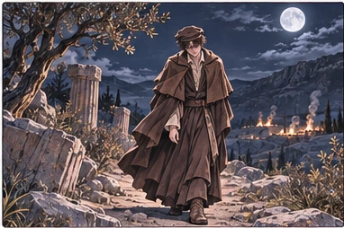
독일어 원문 · 한국어 번역
MEPHISTOPHELES:
Die nordischen Hexen wußt' ich wohl zu meistern,
Mir wird's nicht just mit diesen fremden Geistern.
Der Blocksberg bleibt ein gar bequem Lokal,
Wo man auch sei, man findet sich zumal.메피스토펠레스: 나는 북유럽 마녀들을 마스터하는 방법을 알고 있었고, 나는 이런 이상한 영혼이 마음에 들지 않습니다. Blocksberg는 매우 편안한 장소로 남아 있습니다. 당신이 어디에 있든, 당신은 언제나 서로를 찾을 수 있습니다.
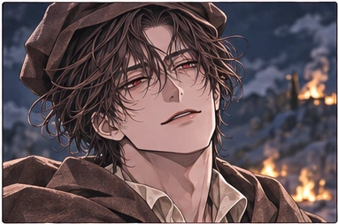
독일어 원문 · 한국어 번역
Frau Ilse wacht für uns auf ihrem Stein,
Auf seiner Höh' wird Heinrich munter sein,
Die Schnarcher schnauzen zwar das Elend an,
Doch alles ist für tausend Jahr getan.일세 부인은 돌 위에서 우리를 지켜보고 있습니다. 하인리히는 그의 키에 기뻐할 것이다. 코골이는 비참함을 비웃고, 그러나 천년 동안에는 모든 것이 이루어지느니라.
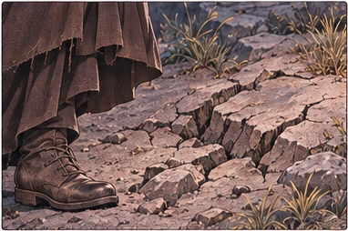
독일어 원문 · 한국어 번역
Wer weiß denn hier nur, wo er geht und steht,
Ob unter ihm sich nicht der Boden bläht?...
Ich wandle lustig durch ein glattes Tal,
Und hinter mir erhebt sich auf einmal그가 어디로 가고 서 있는지 누가 알겠습니까? 그 아래 땅이 확장되지 않습니까? 평탄한 계곡을 신나게 걷는다. 그리고 내 뒤에서 갑자기 일어나
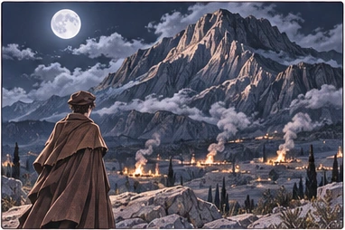
독일어 원문 · 한국어 번역
Ein Berg, zwar kaum ein Berg zu nennen,
Von meinen Sphinxen mich jedoch zu trennen
Schon hoch genug--hier zuckt noch manches Feuer
Das Tal hinab und flammt ums Abenteuer...산은 비록 산은 아니지만, 그러나 나의 스핑크스로부터 나 자신을 분리시키기 위해 이미 충분히 높습니다. 여기에는 아직 화재가 발생하고 있습니다. 계곡 아래로 모험을 둘러싼 불꽃...
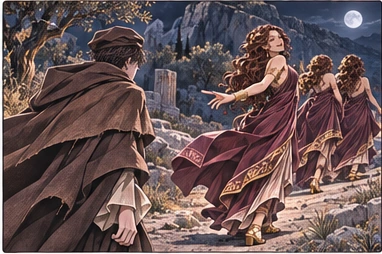
독일어 원문 · 한국어 번역
Noch tanzt und schwebt mir lockend, weichend vor,
Spitzbübisch gaukelnd, der galante Chor.
Nur sachte drauf! Allzugewohnt ans Naschen,
Wo es auch sei, man sucht was zu erhaschen.여전히 내 앞에서 유혹적으로, 부드럽게 춤추고 떠다닌다. 용감한 합창단은 장난스럽게 행동합니다. 조심하세요! 간식에 익숙해진, 어디에 있든 사람들은 무언가를 잡으려고 찾고 있습니다.
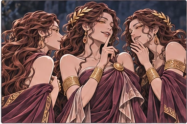
독일어 원문 · 한국어 번역
LAMIEN:
Geschwind, geschwinder!
Und immer weiter!
Dann wieder zaudernd,
Geschwätzig plaudernd.라미아: 빨리, 빨리! 그리고 계속해서! 그러다가 또 망설이고, 수다스러운 수다쟁이.
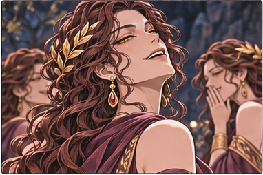
독일어 원문 · 한국어 번역
Es ist so heiter,
Den alten Sünder
Uns nachzuziehen,
Zu schwerer Buße.너무 유쾌해요 늙은 죄인 우리를 따르려고, 참회가 너무 무겁습니다.
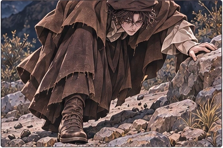
독일어 원문 · 한국어 번역
Mit starrem Fuße
Kommt er geholpert,
Einhergestolpert;
Er schleppt das Bein,발이 뻣뻣한 상태에서 그 사람이 부딪쳐 오면, 우연히 발견했습니다. 그는 다리를 끌고,
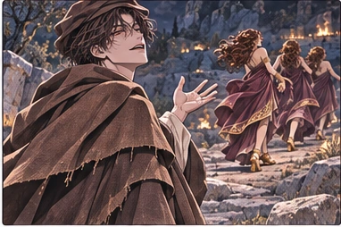
독일어 원문 · 한국어 번역
Wie wir ihn fliehen,
Uns hinterdrein!
MEPHISTOPHELES:
Verflucht Geschick! Betrogne Mannsen!
Von Adam her verführte Hansen!우리가 그에게서 도망치는 방법 우리 다음! 메피스토펠레스: 빌어먹을 스킬! 만센을 속여라! 아담에게 유혹당한 한센!
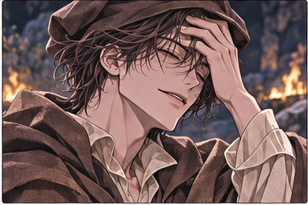
독일어 원문 · 한국어 번역
Alt wird man wohl, wer aber klug?
Warst du nicht schon vernarrt genug!
Man weiß, das Volk taugt aus dem Grunde nichts,
Geschnürten Leibs, geschminkten Angesichts.사람은 늙어가지만 누가 현명해지겠는가? 이미 충분히 미쳤지 않았나요? 우리는 사람들이 기본적으로 좋지 않다는 것을 알고 있습니다. 잘록한 몸, 화장한 얼굴.
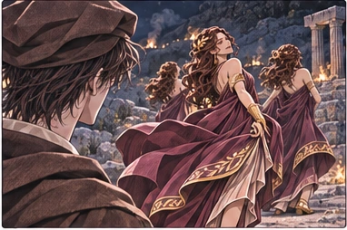
독일어 원문 · 한국어 번역
Nichts haben sie Gesundes zu erwidern,
Wo man sie anfaßt, morsch in allen Gliedern.
Man weiß, man sieht's, man kann es greifen,
Und dennoch tanzt man, wenn die Luder pfeifen!그들은 그 대가로 건강한 말을 할 것이 없습니다. 당신이 만지는 곳마다 모든 팔다리가 썩었습니다. 알 수 있고, 볼 수 있고, 만질 수 있고, 그런데도 그 년들이 휘파람을 불면 당신은 춤을 춥니다!
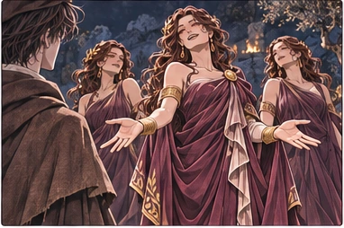
독일어 원문 · 한국어 번역
LAMIEN:
Halt! er besinnt sich, zaudert, steht;
Entgegnet ihm, daß er euch nicht entgeht!
MEPHISTOPHELES:
Nur zu! und laß dich ins Gewebe
Der Zweifelei nicht törig ein;라미아: 그만해! 그는 반성하고, 주저하고, 서 있다. 그 사람이 당신을 피하지 않도록 그에게 응답하십시오! 메피스토펠레스: 계속하세요! 그리고 조직에 몸을 맡겨보세요 어리석게 의심하지 마십시오.
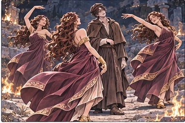
독일어 원문 · 한국어 번역
Denn wenn es keine Hexen gäbe,
Wer Teufel möchte Teufel sein!
LAMIEN:
Kreisen wir um diesen Helden!
Liebe wird in seinem Herzen마녀가 없었다면, 누가 악마가 되고 싶어? 라미아: 이 영웅 주위를 돌자! 그의 마음에는 사랑이 있을 것이다
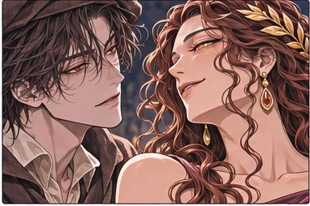
독일어 원문 · 한국어 번역
Sich gewiß für eine melden.
MEPHISTOPHELES:
Zwar bei ungewissem Schimmer
Scheint ihr hübsche Frauenzimmer,
Und so möcht' ich euch nicht schelten.꼭 한 번 신청해보세요. 메피스토펠레스: 불확실한 빛을 띠고 있지만 당신은 예쁜 여자 같아요, 그래서 나는 당신을 꾸짖고 싶지 않습니다.
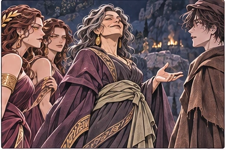
독일어 원문 · 한국어 번역
EMPUSE:
Auch nicht mich! als eine solche
Laßt mich ein in eure Folge.
LAMIEN:
Die ist in unserm Kreis zuviel,
Verdirbt doch immer unser Spiel.엠퓨즈: 나도 아니야! 그 자체로 당신의 에피소드를 들려주세요. 라미아: 우리 서클에는 그런 일이 너무 많아요. 항상 우리 게임을 망치거든요.
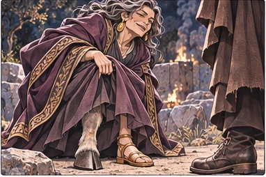
독일어 원문 · 한국어 번역
EMPUSE:
Begrüßt von Mühmichen Empuse,
Der Trauten mit dem Eselsfuße!
Du hast nur einen Pferdefuß,
Und doch, Herr Vetter, schönsten Gruß!엠퓨즈: Mühmichen Empuse가 환영합니다. 당나귀 발을 가진 사랑! 당신은 말발이 하나밖에 없어요. 하지만 베터씨, 감사합니다!
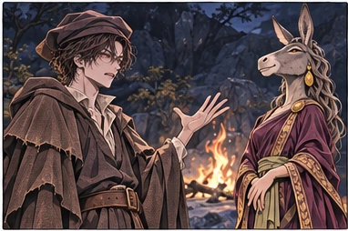
독일어 원문 · 한국어 번역
MEPHISTOPHELES:
Hier dacht' ich lauter Unbekannte
Und finde leider Nahverwandte;
Es ist ein altes Buch zu blättern:
Vom Harz bis Hellas immer Vettern!메피스토펠레스: 여기는 다 낯선 사람들인 줄 알았는데 불행히도 가까운 친척을 찾으십시오. 살펴보아야 할 오래된 책이 있습니다. Harz에서 Hellas까지, 항상 사촌입니다!
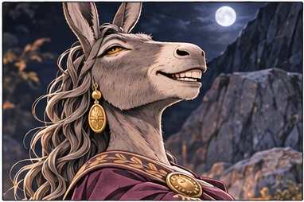
독일어 원문 · 한국어 번역
EMPUSE:
Entschieden weiß ich gleich zu handeln,
In vieles könnt' ich mich verwandeln;
Doch Euch zu Ehren hab' ich jetzt
Das Eselsköpfchen aufgesetzt.엠퓨즈: 바로 행동하기로 결정하고, 나는 나 자신을 여러 가지로 변화시킬 수 있었습니다. 하지만 당신을 기리기 위해 지금은 갖고 있어요 당나귀의 머리가 위에 있습니다.
독일어 원문 · 한국어 번역
MEPHISTOPHELES:
Ich merk', es hat bei diesen Leuten
Verwandtschaft Großes zu bedeuten;
Doch mag sich, was auch will, eräugnen,
Den Eselskopf möcht' ich verleugnen.메피스토펠레스: 나는 이 사람들에게 그런 일이 있다는 것을 알아차렸다 친족 관계는 위대한 것을 의미합니다. 하지만 무슨 일이 일어나더라도, 나는 당나귀의 머리를 부정하고 싶다.
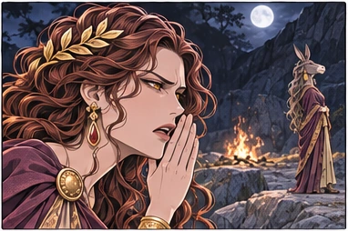
독일어 원문 · 한국어 번역
LAMIEN:
Daß diese Garstige, sie verscheucht,
Was irgend schön und lieblich deucht;
Was irgend schön und lieblich wär'--
Sie kommt heran, es ist nicht mehr!라미아: 이 못된 여자가 겁을 주어 쫓아낸다고 아름답고 사랑스러워 보이는 것은 무엇이든; 무엇이든 아름답고 사랑스러울 것입니다. 그녀가 오고 있어요. 더 이상은 없어요!
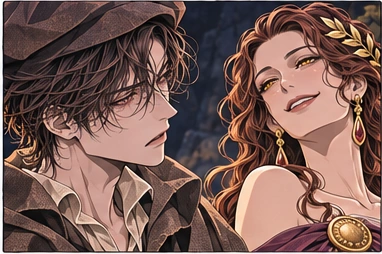
독일어 원문 · 한국어 번역
MEPHISTOPHELES:
Auch diese Mühmchen zart und schmächtig,
Sie sind mir allesamt verdächtig;
Und hinter solcher Wänglein Rosen
Fürcht' ich doch auch Metamorphosen.메피스토펠레스: 이 어린 소녀들도 섬세하고 가냘픈데, 그들은 모두 나에게 의심스럽습니다. 그리고 그런 작은 꽃 뒤에 장미 나는 또한 변태를 두려워합니다.
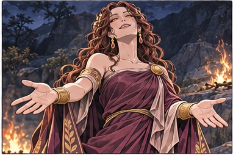
독일어 원문 · 한국어 번역
LAMIEN:
Versuch es doch! sind unsrer viele.
Greif zu! Und hast du Glück im Spiele,
Erhasche dir das beste Los.
Was soll das lüsterne Geleier?라미아: 시도해 보세요! 우리 중 다수입니다. 잡아! 그리고 게임에서 운이 좋다면, 최고의 티켓을 받으세요. 이 탐욕스러운 독수리는 무엇을 해야 할까요?
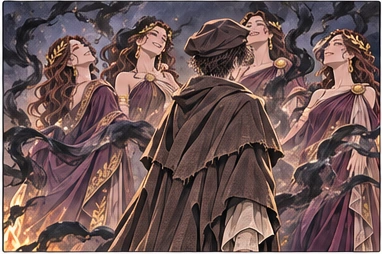
독일어 원문 · 한국어 번역
Du bist ein miserabler Freier,
Stolzierst einher und tust so groß!--
Nun mischt er sich in unsre Scharen;
Laßt nach und nach die Masken fahren당신은 비참한 구혼자입니다. 뽐내며 크게 행동해!-- 이제 그는 우리 군중과 섞입니다. 마스크를 조금씩 풀어가자
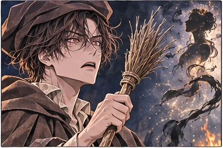
독일어 원문 · 한국어 번역
Und gebt ihm euer Wesen bloß.
MEPHISTOPHELES:
Die Schönste hab' ich mir erlesen...
O weh mir! welch ein dürrer Besen!
Und diese?... Schmähliches Gesicht!그리고 그분께 당신의 본질을 드러내십시오. 메피스토펠레스: 제일 예쁜걸로 골랐는데.. 아, 나야말로 나야! 정말 마른 빗자루야! 그리고 이건?... 부끄러운 얼굴!
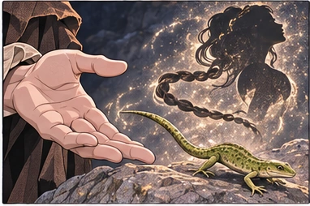
독일어 원문 · 한국어 번역
LAMIEN:
Verdienst du's besser? dünkt es nicht.
MEPHISTOPHELES:
Die Kleine möcht' ich mir verpfänden...
Lacerte schlüpft mir aus den Händen!
Und schlangenhaft der glatte Zopf.라미아: 당신은 더 나은 자격이 있습니까? 그렇지 않은 것 같습니다. 메피스토펠레스: 그 작은 것을 전당포로 삼고 싶습니다... 라세르테가 내 손에서 미끄러져 나갔어! 그리고 부드러운 땋은 머리는 뱀같습니다.
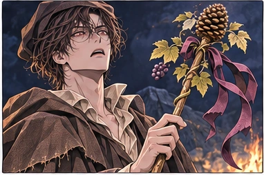
독일어 원문 · 한국어 번역
Dagegen fass' ich mir die Lange...
Da pack' ich eine Thyrsusstange,
Den Pinienapfel als den Kopf!
Wo will's hinaus?... Noch eine Dicke,반면에 저는 시간이 많이 걸리네요.. 그럼 내가 흉선 막대기를 잡을게. 머리에는 파인애플! 어디로 가는 걸까요?... 또 다른 뚱뚱한 것,
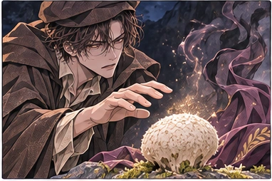
독일어 원문 · 한국어 번역
An der ich mich vielleicht erquicke;
Zum letztenmal gewagt! Es sei!
Recht quammig, quappig, das bezahlen
Mit hohem Preis Orientalen...거기서 나는 아마도 나 자신을 재충전할 수 있을 것입니다. 마지막으로 감히! 그렇게 하세요! 꽤 흐물흐물해, 흐물흐물해, 그만한 대가를 치뤄 고가의 오리엔탈과 함께..
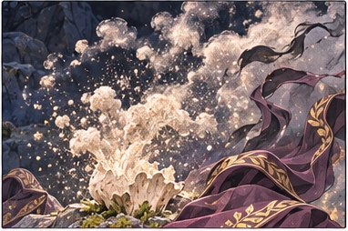
독일어 원문 · 한국어 번역
Doch ach! der Bovist platzt entzwei!
LAMIEN:
Fahrt auseinander, schwankt und schwebet
Blitzartig, schwarzen Flugs umgebet
Den eingedrungnen Hexensohn!하지만 아아! Bovist가 둘로 터졌습니다! 라미아: 떨어져서 움직이고, 흔들리고, 떠다닌다 번개에 둘러싸여 검은 비행 침략당한 마녀의 아들!
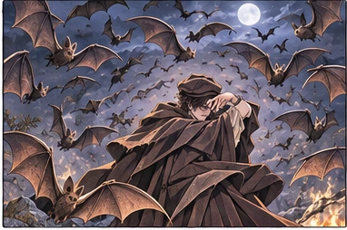
독일어 원문 · 한국어 번역
Unsichre, schauderhafte Kreise!
Schweigsamen Fittichs, Fledermäuse!
Zu wohlfeil kommt er doch davon.
MEPHISTOPHELES:
Viel klüger, scheint es, bin ich nicht geworden;불확실하고 끔찍한 서클! 조용한 날개여, 박쥐여! 그는 너무 싸게 하차합니다. 메피스토펠레스: 나는 그다지 현명해지지 않은 것 같습니다.
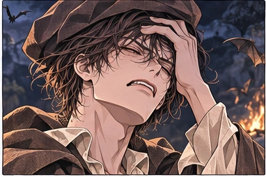
독일어 원문 · 한국어 번역
Absurd ist's hier, absurd im Norden,
Gespenster hier wie dort vertrackt,
Volk und Poeten abgeschmackt.
Ist eben hier eine Mummenschanz여기서도 이상하고, 북쪽에서도 이상하고, 여기저기 귀신이 까다롭게 굴고, 사람과 시인은 무미건조하다. 여기 미라가 있어요
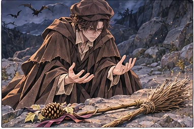
독일어 원문 · 한국어 번역
Wie überall, ein Sinnentanz.
Ich griff nach holden Maskenzügen
Und faßte Wesen, daß mich's schauerte...
Ich möchte gerne mich betrügen,여느 곳과 마찬가지로 감각의 춤입니다. 나는 아름다운 마스크 기능에 도달했습니다 그리고 나를 전율하게 만든 생물들을 붙잡았는데... 나 자신을 속이고 싶다.
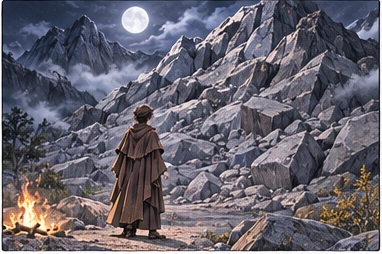
독일어 원문 · 한국어 번역
Wenn es nur länger dauerte.
Wo bin ich denn? Wo will's hinaus?
Das war ein Pfad, nun ist's ein Graus.
Ich kam daher auf glatten Wegen,더 오래 지속된다면. 그렇다면 나는 어디에 있는 걸까? 어디 가세요? 그것은 길이었는데 이제는 공포가 되었습니다. 그래서 나는 순조로운 길을 따라 왔고,
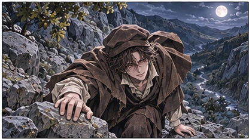
독일어 원문 · 한국어 번역
Und jetzt steht mir Geröll entgegen.
Vergebens klettr' ich auf und nieder,
Wo find' ich meine Sphinxe wieder?
So toll hätt' ich mir's nicht gedacht,그리고 이제 나는 잔해에 직면했습니다. 헛되이 오르내리며 내 스핑크스는 어디서 다시 찾을 수 있나요? 이렇게까지 대단할 거라고는 생각도 못했을 텐데,
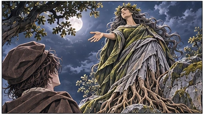
독일어 원문 · 한국어 번역
Ein solch Gebirge in einer Nacht!
Das heiß' ich frischen Hexenritt,
Die bringen ihren Blocksberg mit.
OREAS:
Herauf hier! Mein Gebirg ist alt,하룻밤 사이에 이런 산이! 그게 바로 내가 새로운 마녀 놀이라고 부르는 거야. 그들은 Blocksberg를 가지고 왔습니다. 아시아: 여기! 내 산은 오래됐고,
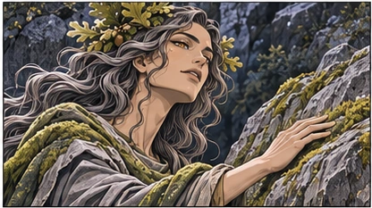
독일어 원문 · 한국어 번역
Steht in ursprünglicher Gestalt.
Verehre schroffe Felsensteige,
Des Pindus letztgedehnte Zweige!
Schon stand ich unerschüttert so,원래의 형태로 서있습니다. 울퉁불퉁한 바위길을 좋아하고, 마지막으로 뻗은 핀도스의 가지들! 나는 이미 그 자리에 흔들리지 않고 서 있었다.
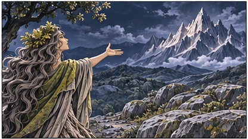
독일어 원문 · 한국어 번역
Als über mich Pompejus floh.
Daneben das Gebild des Wahns
Verschwindet schon beim Krähn des Hahns.
Dergleichen Märchen seh' ich oft entstehn폼페이우스가 나를 덮쳐 도망쳤을 때. 그 옆에는 광기의 구조 수탉이 울면 사라집니다. 이런 동화가 나오는 걸 자주 봐요
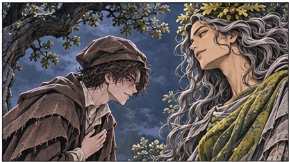
독일어 원문 · 한국어 번역
Und plötzlich wieder untergehn.
MEPHISTOPHELES:
Sei Ehre dir, ehrwürdiges Haupt,
Von hoher Eichenkraft umlaubt!
Der allerklarste Mondenschein그리고 갑자기 다시 가라 앉습니다. 메피스토펠레스: 존경하는 머리여, 영광을 받으소서. 높은 오크 강도로 잎을 맺었습니다! 가장 맑은 달빛
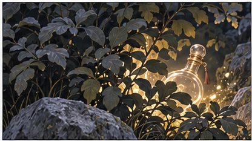
독일어 원문 · 한국어 번역
Dringt nicht zur Finsternis herein.--
Doch neben am Gebüsche zieht
Ein Licht, das gar bescheiden glüht.
Wie sich das alles fügen muß!어둠 속으로 들어가지 마세요.-- 그러나 덤불 옆에는 당김이 있습니다. 은은하게도 빛나는 빛. 이 모든 것이 어떻게 하나로 합쳐져야 하는지!
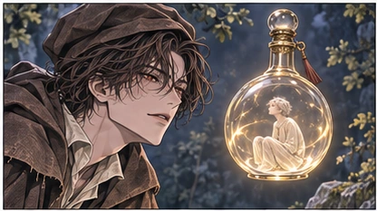
독일어 원문 · 한국어 번역
Fürwahr, es ist Homunculus!
Woher des Wegs, du Kleingeselle?
HOMUNCULUS:
Ich schwebe so von Stell' zu Stelle
Und möchte gern im besten Sinn entstehn,과연 호문클루스다! 너는 어디서 왔느냐, 꼬마야? 호문쿨루스: 나는 여기저기 떠다닌다 그리고 가장 좋은 의미로 등장하고 싶습니다.
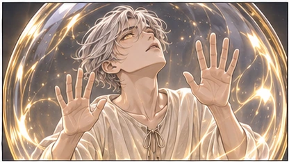
독일어 원문 · 한국어 번역
Voll Ungeduld, mein Glas entzweizuschlagen;
Allein, was ich bisher gesehn,
Hinein da möcht' ich mich nicht wagen.
Nur, um dir's im Vertraun zu sagen:내 잔을 두 개로 깨뜨리는 것을 참을 수 없습니다. 지금까지 본 것만 해도 나는 거기에 모험을 하고 싶지 않습니다. 자신있게 말씀드리자면:
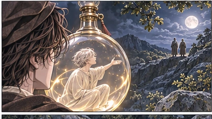
독일어 원문 · 한국어 번역
Zwei Philosophen bin ich auf der Spur,
Ich horchte zu, es hieß: Natur, Natur!
Von diesen will ich mich nicht trennen,
Sie müssen doch das irdische Wesen kennen;나는 두 철학자의 길을 걷고 있습니다. 나는 들었고, 그것은 말했다: 자연, 자연! 나는 이것들과 헤어지고 싶지 않다. 당신은 지상의 존재를 알아야합니다.
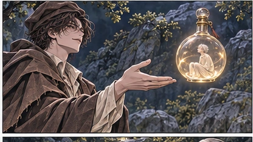
독일어 원문 · 한국어 번역
Und ich erfahre wohl am Ende,
Wohin ich mich am allerklügsten wende.
MEPHISTOPHELES:
Das tu auf deine eigne Hand.
Denn wo Gespenster Platz genommen,그리고 결국엔 알게 될 것 같아요. 내가 가장 현명하게 의지하는 곳은 어디든지. 메피스토펠레스: 이 작업을 직접 수행하십시오. 유령들이 자리잡은 곳으로,
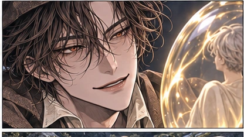
독일어 원문 · 한국어 번역
Ist auch der Philosoph willkommen.
Damit man seiner Kunst und Gunst sich freue,
Erschafft er gleich ein Dutzend neue.
Wenn du nicht irrst, kommst du nicht zu Verstand.철학자도 환영합니다. 그의 예술과 은총을 기뻐할 수 있도록, 그는 한 번에 12개의 새로운 항목을 만듭니다. 당신이 틀리지 않으면 정신을 차리지 못할 것입니다.
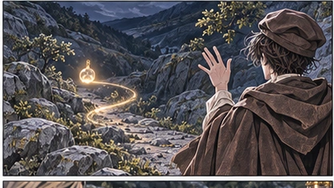
독일어 원문 · 한국어 번역
Willst du entstehn, entsteh auf eigne Hand!
HOMUNCULUS:
Ein guter Rat ist auch nicht zu verschmähn.
MEPHISTOPHELES:
So fahre hin! Wir wollen's weiter sehn.일어나고 싶다면 스스로 일어나라! 호문쿨루스: 좋은 조언도 무시해서는 안됩니다. 메피스토펠레스: 그러니 거기로 가세요! 우리는 더 보고 싶습니다.
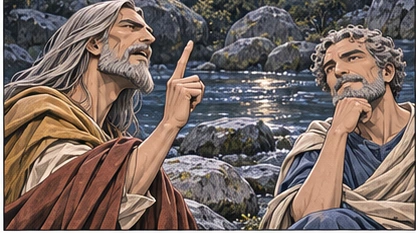
독일어 원문 · 한국어 번역
ANAXAGORAS:
Dein starrer Sinn will sich nicht beugen;
Bedarf es Weitres, dich zu überzeugen?
THALES:
Die Welle beugt sich jedem Winde gern,아낙사고라스: 당신의 완고한 마음은 굴복하기를 거부합니다. 당신을 설득하기 위해 더 필요한 것이 있습니까? 탈레스: 파도는 어떤 바람에도 기꺼이 휘어지고,
독일어 원문 · 한국어 번역
Doch hält sie sich vom schroffen Felsen fern.
ANAXAGORAS:
Durch Feuerdunst ist dieser Fels zu Handen.
THALES:
Im Feuchten ist Lebendiges erstanden.
그러나 그녀는 험준한 바위에서 멀리 떨어져 있습니다. 아낙사고라스: 이 암석은 화재 증기를 통해 접근할 수 있습니다. 탈레스: 습기 속에서 생명체가 생겨났습니다.